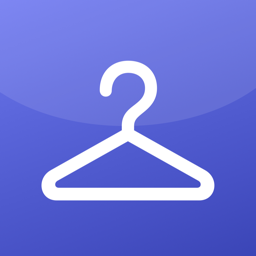

Closet FinderPolítica de privacidad
Última actualización: 6 de octubre de 2026
Closet Finder es una app para iPhone y iPad que te ayuda a saber qué ropa tienes y dónde la guardas. Aquí se explica qué hace la app con tus datos. En resumen: no recopilamos ningún dato.
No recopilamos datos
La app no tiene cuentas, anuncios, analítica ni rastreo. El desarrollador no recibe, vende ni comparte ninguna información sobre ti ni sobre tu ropa.
Dónde se guardan tus datos
Las prendas, fotos, ubicaciones, medidas, looks y maletas se guardan en tu dispositivo. Si usas iCloud, se sincronizan con tu base de datos privada de iCloud, a la que solo tú tienes acceso y que Apple gestiona según su política de privacidad. El desarrollador no puede ver esos datos.
Cámara y fotos
La cámara y la fototeca solo se usan cuando tú lo pides, para fotografiar prendas y etiquetas. Al elegir fotos, la app solo accede a las que seleccionas. El recorte del fondo, el color y la lectura de etiquetas se hacen en el propio dispositivo.
Apple Intelligence
La búsqueda inteligente y la lectura de etiquetas usan el modelo de Apple Intelligence que funciona en el dispositivo. El texto no sale de tu iPhone o iPad.
Destino de las maletas
Si escribes el destino de un viaje, ese texto se envía a Apple Maps para localizarlo y saber en qué hemisferio está. Apple lo trata según su política de privacidad. No se envía nada más.
Copias de seguridad
Solo se crea un archivo de copia de seguridad cuando tú lo exportas, y se guarda donde tú elijas.
Cómo borrar tus datos
Puedes borrar prendas y cualquier otro elemento desde la app. Para borrar la copia de iCloud, ve a Ajustes del iPhone › tu nombre › iCloud › Gestionar almacenamiento › Closet Finder.
Menores
La app no recopila datos de nadie, tampoco de menores.
Cambios
Si esta política cambia, la nueva versión se publicará en esta página con su fecha.
Contacto
Si tienes cualquier duda, abre una incidencia en GitHub. Responsable: Sergio González Díaz.
Privacy Policy
Last updated: October 6, 2026
Closet Finder is an iPhone and iPad app that helps you know what clothes you have and where you keep them. This page explains what the app does with your data. In short: we don’t collect any data.
We don’t collect data
The app has no accounts, ads, analytics or tracking. The developer doesn’t receive, sell or share any information about you or your clothes.
Where your data is stored
Your items, photos, places, measurements, looks and suitcases are stored on your device. If you use iCloud, they sync with your private iCloud database, which only you can access and which Apple manages under its privacy policy. The developer can’t see this data.
Camera and photos
The camera and photo library are only used when you ask, to photograph clothes and labels. When you choose photos, the app only accesses the ones you select. Background removal, color detection and label reading happen on the device.
Apple Intelligence
Smart search and label reading use Apple Intelligence’s on-device model. The text never leaves your iPhone or iPad.
Trip destinations
If you enter a trip destination, that text is sent to Apple Maps to locate it and know which hemisphere it’s in. Apple handles it under its privacy policy. Nothing else is sent.
Backups
A backup file is only created when you export one, and it’s saved wherever you choose.
How to delete your data
You can delete items and anything else from the app. To delete the iCloud copy, go to iPhone Settings › your name › iCloud › Manage Storage › Closet Finder.
Children
The app doesn’t collect data from anyone, including children.
Changes
If this policy changes, the new version will be published on this page with its date.
Contact
If you have any questions, open an issue on GitHub. Data controller: Sergio González Díaz.
Politique de confidentialité
Dernière mise à jour: 6 octobre 2026
Closet Finder est une app pour iPhone et iPad qui vous aide à savoir quels vêtements vous avez et où vous les rangez. Cette page explique ce que fait l’app de vos données. En bref : nous ne collectons aucune donnée.
Nous ne collectons aucune donnée
L’app n’a ni compte, ni publicité, ni outil d’analyse, ni suivi. Le développeur ne reçoit, ne vend et ne partage aucune information sur vous ou vos vêtements.
Où sont stockées vos données
Vos vêtements, photos, emplacements, mesures, looks et valises sont stockés sur votre appareil. Si vous utilisez iCloud, ils sont synchronisés avec votre base de données iCloud privée, à laquelle vous seul avez accès et qu’Apple gère selon sa politique de confidentialité. Le développeur ne peut pas voir ces données.
Appareil photo et photos
L’appareil photo et la photothèque ne sont utilisés qu’à votre demande, pour photographier vêtements et étiquettes. Quand vous choisissez des photos, l’app n’accède qu’à celles que vous sélectionnez. Le détourage, la couleur et la lecture des étiquettes se font sur l’appareil.
Apple Intelligence
La recherche intelligente et la lecture des étiquettes utilisent le modèle Apple Intelligence qui fonctionne sur l’appareil. Le texte ne quitte pas votre iPhone ou iPad.
Destination des valises
Si vous saisissez la destination d’un voyage, ce texte est envoyé à Apple Plans pour la localiser et savoir dans quel hémisphère elle se trouve. Apple le traite selon sa politique de confidentialité. Rien d’autre n’est envoyé.
Sauvegardes
Un fichier de sauvegarde n’est créé que lorsque vous l’exportez, et il est enregistré où vous le choisissez.
Supprimer vos données
Vous pouvez supprimer vêtements et autres éléments depuis l’app. Pour supprimer la copie iCloud : Réglages de l’iPhone › votre nom › iCloud › Gérer le stockage › Closet Finder.
Enfants
L’app ne collecte de données sur personne, y compris les enfants.
Modifications
Si cette politique change, la nouvelle version sera publiée sur cette page avec sa date.
Contact
Pour toute question, ouvrez un ticket sur GitHub. Responsable : Sergio González Díaz.
Datenschutzerklärung
Zuletzt aktualisiert: 6. Oktober 2026
Closet Finder ist eine App für iPhone und iPad, mit der du weißt, welche Kleidung du hast und wo du sie aufbewahrst. Hier steht, was die App mit deinen Daten macht. Kurz gesagt: Wir erfassen keine Daten.
Wir erfassen keine Daten
Die App hat keine Konten, keine Werbung, keine Analyse und kein Tracking. Der Entwickler erhält, verkauft oder teilt keine Informationen über dich oder deine Kleidung.
Wo deine Daten gespeichert sind
Deine Kleidungsstücke, Fotos, Orte, Maße, Looks und Koffer werden auf deinem Gerät gespeichert. Wenn du iCloud nutzt, werden sie mit deiner privaten iCloud-Datenbank synchronisiert, auf die nur du Zugriff hast und die Apple gemäß seiner Datenschutzrichtlinie verwaltet. Der Entwickler kann diese Daten nicht sehen.
Kamera und Fotos
Kamera und Fotomediathek werden nur auf deinen Wunsch verwendet, um Kleidung und Etiketten zu fotografieren. Bei der Fotoauswahl greift die App nur auf die ausgewählten Fotos zu. Freistellen, Farberkennung und Etikettenlesen passieren auf dem Gerät.
Apple Intelligence
Die intelligente Suche und das Etikettenlesen nutzen das Apple-Intelligence-Modell auf dem Gerät. Der Text verlässt dein iPhone oder iPad nicht.
Reiseziele
Wenn du ein Reiseziel eingibst, wird dieser Text an Apple Karten gesendet, um es zu finden und die Erdhalbkugel zu bestimmen. Apple behandelt ihn gemäß seiner Datenschutzrichtlinie. Sonst wird nichts gesendet.
Backups
Eine Backup-Datei wird nur erstellt, wenn du sie exportierst, und dort gespeichert, wo du es wählst.
Daten löschen
Du kannst Kleidungsstücke und alles andere in der App löschen. Die iCloud-Kopie löschst du unter iPhone-Einstellungen › dein Name › iCloud › Speicher verwalten › Closet Finder.
Kinder
Die App erfasst von niemandem Daten, auch nicht von Kindern.
Änderungen
Wenn sich diese Erklärung ändert, wird die neue Fassung mit Datum auf dieser Seite veröffentlicht.
Kontakt
Bei Fragen erstelle ein Issue auf GitHub. Verantwortlich: Sergio González Díaz.
Informativa sulla privacy
Ultimo aggiornamento: 6 ottobre 2026
Closet Finder è un’app per iPhone e iPad che ti aiuta a sapere quali vestiti hai e dove li tieni. Qui spieghiamo cosa fa l’app con i tuoi dati. In breve: non raccogliamo alcun dato.
Non raccogliamo dati
L’app non ha account, pubblicità, analisi né tracciamento. Lo sviluppatore non riceve, vende né condivide alcuna informazione su di te o sui tuoi vestiti.
Dove sono salvati i tuoi dati
Capi, foto, posti, misure, look e valigie sono salvati sul tuo dispositivo. Se usi iCloud, si sincronizzano con il tuo database iCloud privato, a cui solo tu hai accesso e che Apple gestisce secondo la sua informativa sulla privacy. Lo sviluppatore non può vedere questi dati.
Fotocamera e foto
La fotocamera e la libreria foto si usano solo quando lo chiedi, per fotografare capi ed etichette. Quando scegli le foto, l’app accede solo a quelle selezionate. Rimozione dello sfondo, colore e lettura delle etichette avvengono sul dispositivo.
Apple Intelligence
La ricerca intelligente e la lettura delle etichette usano il modello di Apple Intelligence sul dispositivo. Il testo non lascia il tuo iPhone o iPad.
Destinazione delle valigie
Se scrivi la destinazione di un viaggio, quel testo viene inviato a Mappe di Apple per localizzarla e sapere in quale emisfero si trova. Apple lo tratta secondo la sua informativa sulla privacy. Non viene inviato nient’altro.
Backup
Un file di backup viene creato solo quando lo esporti, e viene salvato dove scegli tu.
Come cancellare i tuoi dati
Puoi eliminare capi e qualsiasi altro elemento dall’app. Per eliminare la copia su iCloud: Impostazioni dell’iPhone › il tuo nome › iCloud › Gestisci spazio › Closet Finder.
Minori
L’app non raccoglie dati di nessuno, nemmeno dei minori.
Modifiche
Se questa informativa cambia, la nuova versione sarà pubblicata in questa pagina con la sua data.
Contatti
Per qualsiasi domanda, apri una segnalazione su GitHub. Titolare: Sergio González Díaz.
Política de privacidade
Última atualização: 6 de outubro de 2026
O Closet Finder é um app para iPhone e iPad que ajuda você a saber quais roupas tem e onde as guarda. Esta página explica o que o app faz com seus dados. Em resumo: não coletamos nenhum dado.
Não coletamos dados
O app não tem contas, anúncios, análises nem rastreamento. O desenvolvedor não recebe, vende nem compartilha nenhuma informação sobre você ou suas roupas.
Onde seus dados ficam
Peças, fotos, lugares, medidas, looks e malas ficam salvos no seu dispositivo. Se você usa o iCloud, eles sincronizam com seu banco de dados privado do iCloud, ao qual só você tem acesso e que a Apple gerencia segundo a política de privacidade dela. O desenvolvedor não consegue ver esses dados.
Câmera e fotos
A câmera e a fototeca só são usadas quando você pede, para fotografar roupas e etiquetas. Ao escolher fotos, o app só acessa as que você seleciona. A remoção do fundo, a cor e a leitura de etiquetas acontecem no próprio dispositivo.
Apple Intelligence
A busca inteligente e a leitura de etiquetas usam o modelo do Apple Intelligence que funciona no dispositivo. O texto não sai do seu iPhone ou iPad.
Destino das malas
Se você escreve o destino de uma viagem, esse texto é enviado ao Apple Mapas para localizá-lo e saber em qual hemisfério está. A Apple o trata segundo a política de privacidade dela. Nada mais é enviado.
Backups
Um arquivo de backup só é criado quando você o exporta, e é salvo onde você escolher.
Como apagar seus dados
Você pode apagar peças e qualquer outro item pelo app. Para apagar a cópia do iCloud: Ajustes do iPhone › seu nome › iCloud › Gerenciar Armazenamento › Closet Finder.
Menores
O app não coleta dados de ninguém, nem de menores.
Alterações
Se esta política mudar, a nova versão será publicada nesta página com a data.
Contato
Em caso de dúvidas, abra uma issue no GitHub. Responsável: Sergio González Díaz.